This document describes requirements for pagination and layout of books in latin languages, based on the tradition of print book design and composition. It is hoped that these principles can inform the pagination of digital content as well, and serve as a reference for the CSS Working Group and other interested parties. This work was inspired by [[JLREQ]].
This is a work in progress. No section should be considered final, and the absence of any content does not imply that such content is out of scope, or may not appear in the future. If you feel something should be covered here, tell us! The initial version of this document will focus on books, and at this time will not include requirements specific to magazines or newspapers. The scope will depend heavily on the willingness of people to contribute to this document. Please contact the Digital Publishing Interest Group if you would like to help.
Introduction
Not all stories worth telling can fit in a tweet, on a computer screen, or on a single piece of paper. Ever since the codex replaced the scroll, humans have divided our stories into pages. Pagination is the art and the craft of turning that scroll of content into discrete pieces, whether destined for book pages or screens. Pagination requires us to think about the document at all levels, from the total number of pages to the tiny spaces between letters. Along with graphic design and typography, it determines the look of the page.
Typography is the craft of endowing human language with a durable visual form, and thus with an independent existence.
—Robert Bringhurst, The Elements of Typographic Style
Good pagination, like good typography, aims to be invisible. As the reader turns the page, the stream of words and images in her mind should not be interrupted. Two thousand years of experience have taught us how best to do this. The goal of this document is to describe those rules, as clearly as possible, so they can be implemented in the Open Web Platform. We hope for a day where the pagination of digital books will be as beautiful and transparent as the best printed books.
TK
Fundamentals
Makeup is a highly skilled procedure. If the text is merely divided mechanically into portions of equal length, without regard to where the divisions fall, some of the pages that result are bound to be unacceptable logically or aesthetically: they will incorporate bad breaks.
—Chicago Manual of Style, 14th Edition, 19.40.
What therefore God hath joined together, let not man put asunder.
—The Bible, Matthew 19:6
Every rule of pagination boils down to a single principle: break pages with as little disruption to the reading experience as possible. A widow leaves the last line of a paragraph isolated from the rest of the thought. A recto hyphen means a word is interrupted by a page turn. A heading at the bottom of a page removes the title from the section, and the section from the title.
Tradeoffs
Pagination involves tradeoffs. Fixing a widow may result in a misaligned spread. Fixing that may result in a loose line or paragraph. What is acceptable in one book, or for one publisher, may be unacceptable to another. What is acceptable in one country, or language, may be unacceptable elsewhere.
Untangling the Vertical and the Horizontal
Page breaks are often line breaks. The tiniest change in kerning can make a paragraph longer or shorter, and thus create a widow or an orphan. The work of pagination, as done by typesetters, human or machine, inevitably involves the consideration of the lines of text. And so we will not try too hard to avoid talking about line breaks, when they potentially influence pagination.
Hyphenation and Justification
Good hyphenation and justification is critically important to the appearance and readability of text. Print typesetting systems can often achieve very good results, but most online reading systems do this very poorly.
Hyphenation
Text is often easier to read when words are allowed to break at the end of lines, thus avoiding massive variations in word-spacing or margins. But determining acceptable places to break words is a difficult problem:
All of the following are the results of automated hyphenation algorithms:
The following choices need to be made when considering hyphenation of text.
Should this text be hyphenated at all? Hyphenation is generally suppressed in headings.
What’s the shortest word that can be hyphenated? Five or six is typical.
What's the minimum number of characters allowed before a hyphen? Two is typical, and is sometimes stated as “two-up.”
What's the minimum number of characters allowed after a hyphen? Three is typical, and can be stated as “three-down.”
How many consecutive lines can end with a hyphen (known as a “ladder”)? Two or three is typical.
Should capitalized words be hyphenated?
Can the last word of a paragraph be hyphenated?
Can the last word in a column, page, or spread be hyphenated?
Choosing hyphenation points
A key question is, “who decides what is acceptable?” The answer depends on the language, the culture, the subject matter, and the material being typeset.
Language
Each language has its own conventions about hyphenation. U.S. English hyphenates differently than U.K. English. In some European languages, words may be spelled differently when hyphenated.
TK
Of course, the same text may include words from many different languages.
Culture
Even within the same language, authorities differ on the proper hyphenation of words.
Copyeditors will often specify a canonical reference for hyphenation, which is usually a particular edition of a particular dictionary.
Subject Matter
Specialized subject matter may require additional hyphenation dictionaries. This is common in medicine, law, and science.
Exceptions
Authors should be able to provide a list of exceptions, which add to or override what the system would normally do. The format for doing so should be easily understood.
TeX uses the following format. Possible hyphenation positions are indicated with (surprise!) hyphens. Hyphenation should be prevented where hyphens are absent.
\hyphenation { sur-pris-ingly tan-ta-liz-ing-ly these }
Justification
Algorithms
Greedy
Knuth-Plass (TeX)
Adobe (InDesign)
Paginating Single-Column Text
The simplest situation, which is very common, is when the content is only text, in a single column. Aside from chapter and book optimizations (to be discussed later) and line-breaking, the biggest issue is likely to be widows (see for an example).
Widows
A widow is when the last line(s) of a paragraph falls at the top of a page. Publishers have different standards. Most frown on a single line at the top of the page, although some are OK if that line spans at least three-quarters of the page. Others require at least two lines of a paragraph at the top of a page.
[[css3-break]] does not consider a fractional value for the widow property.
Text spread with widow
Many typesetting systems have settings to prevent widows. CSS discusses these issues in [[css3-break]]. Unfortunately, these systems usually create another problem when they fix the widow. In , there’s no longer a widow at the top of the page, but since the system merely moved a line from the left page to the right, it left behind an empty line, and the pages no longer align at the bottom.
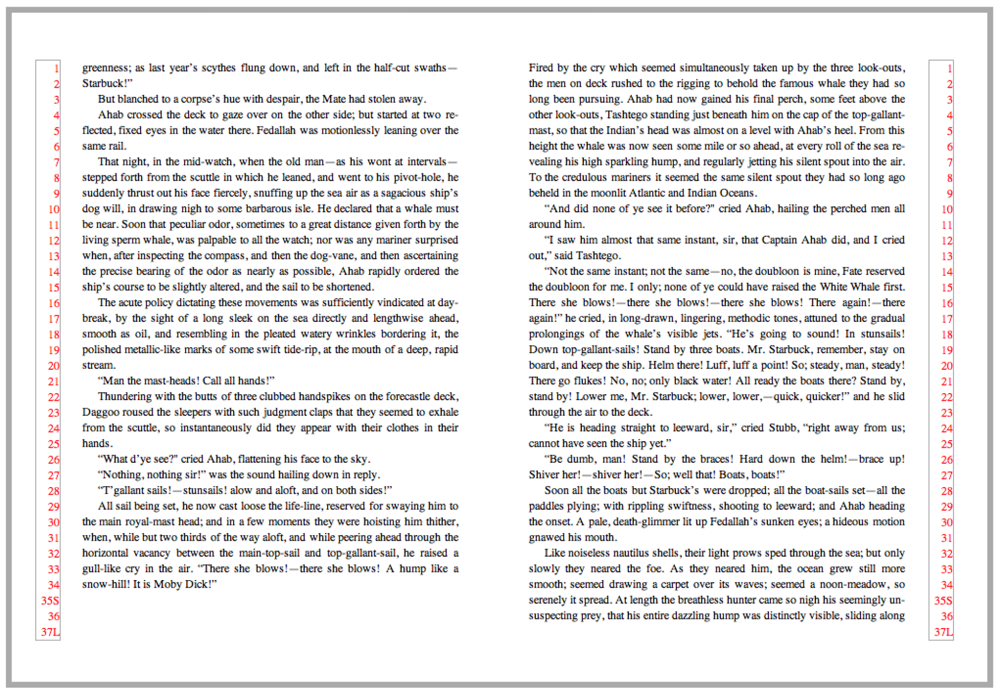 Widow fixed, but pages don’t align
More needs to be done. Removing one line of text from each page of the spread, shown in solves the problem.
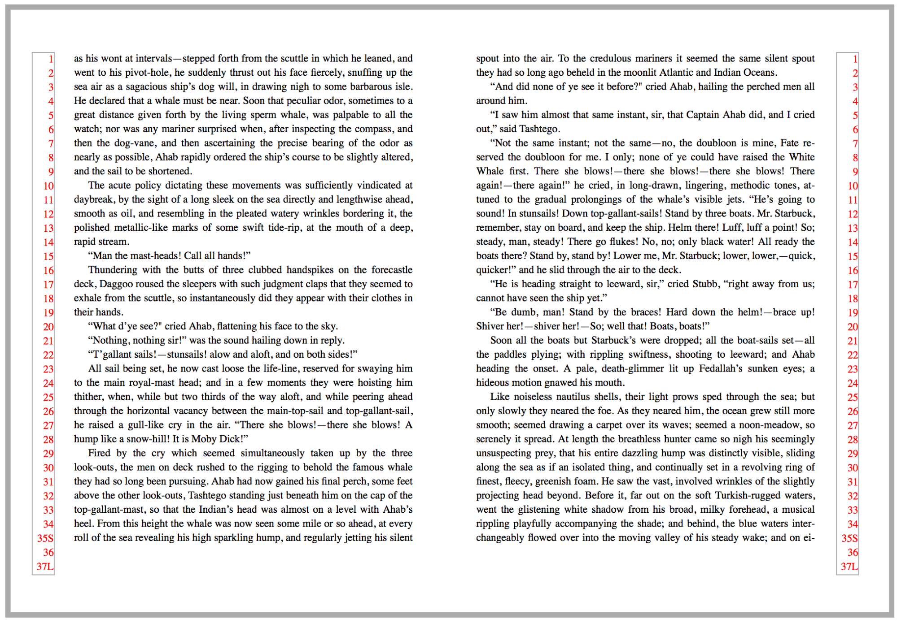 Widow fixed by “running short.”
Orphans
An orphan has two possible meanings in typesetting. It can refer to the minimum number of lines required before a page break (as in [[css3-break]]). It can also refer to the last line of a paragraph in any context. In the former context, many publishers now accept a single line of a paragraph before a page break. For the latter, standards vary widely. Some publishers want the last line to be longer than the paragraph indent. Some require one or two full words, or a certain number of characters. Most avoid having only a fragment of a word as the last line.
CSS does not currently address the second meaning of orphan.
Constraints on page depth
In traditional typesetting, the first defense against bad breaks is to change the depth of the page. “Running long” or “running short” means including one more (or one less) line of text on each page of the spread, thus sidestepping the previously-identified issue.
A typical book design includes instructions on whether it’s acceptable to run short, long, or (more rarely) both. Often there are also constraints on how many consecutive spreads (or pages) may be altered in this way. If running both long and short, it’s usually forbidden to go from one to another without an intervening normal spread.
Running long or short may affect the space between the last line of text and a page footer or folio. Most publishers prefer footers to be in a fixed position. If, instead, the space between the last line of text and the footer is fixed, the footer is said to "bounce."
Facing Pages
If a document has facing pages, the publisher usually requires that they align top and bottom. Exceptions include:
It's the last page of a chapter.
The page contains no text—only images or tables
When aligning facing pages will make some other issue worse
Recto and Verso Hyphens
Publishers sometimes constrain what characters may appear before a page break. Most commonly, the right-hand page of a spread may not end with a word fragment, as the reader must turn the page before reading the rest of the word. Less common is a prohibition on the verso page ending with a hyphen.
Space Breaks and Ornaments
Many novels, and some narrative non-fiction books, include small breaks in the text. These are usually represented by one to three blank lines, or by a small ornament or dingbat. Problems arise when these breaks fall at the top or bottom of a page.
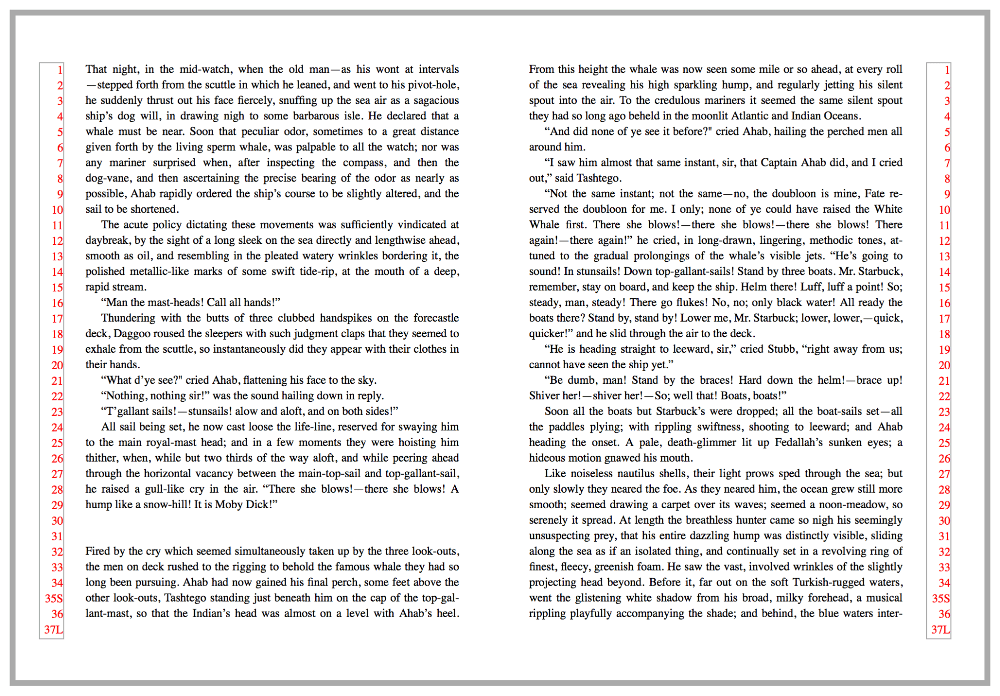 Space break
If, however, the space break falls at the bottom of the page, confusion can result. In , it’s hard to tell there’s a space break, as it just looks like the page is a few lines short.
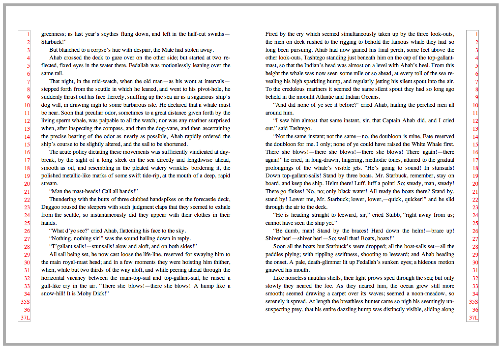 Incorrect: Space break at bottom of page
In that case, asterisks or some other ornament is added to the top or bottom of a page, as a visual reminder of the break. To get everything to work out, the spread was run short, and the space break (now with ornament) pushed to the top of the second page. See .
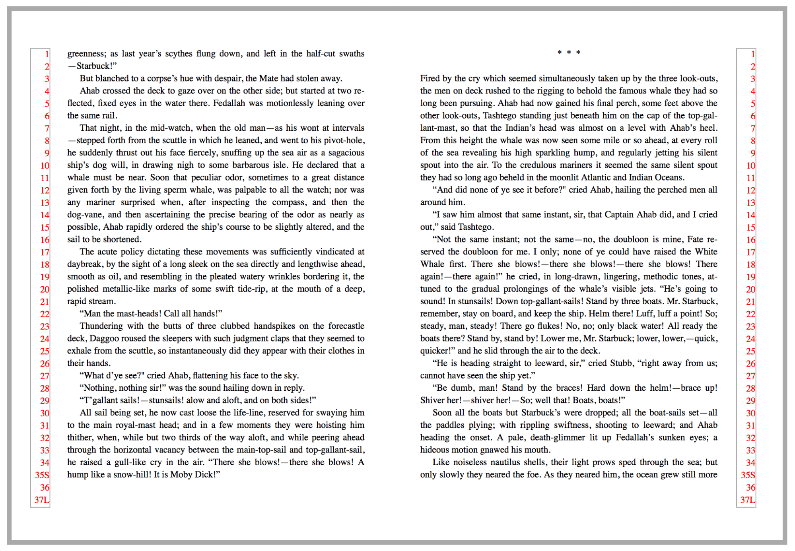 Space break at top of page with asterisks
This is an example where the page position of an element determines its content as well as design. A ::page-top or ::page-bottom pseudo-element might prove useful.
Paragraphs and indentation
TK
Initial Capitals
Large, decorative letters have been used to start new sections of text since long before printing. In fact, their use predates lowercase letters entirely.
Drop caps
A drop cap is a larger-than-usual letter at the start of a paragraph, with a baseline at least one line lower than the first baseline of the paragraph. The size of drop caps is usually indicated by how many lines they occupy—two-line and three-line drop caps are the most common.
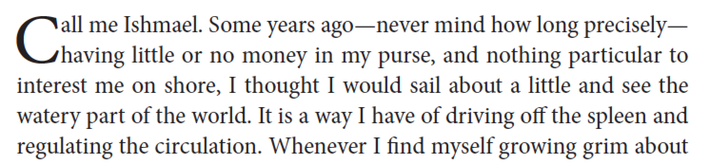 Two-line drop cap
Aligning the letter vertically is a challenge. The top of the letter should align with the ascenders of the first line of text. The baseline of the letter should fall on the baseline of one of the following lines (the second for a 2-line drop cap, etc.).
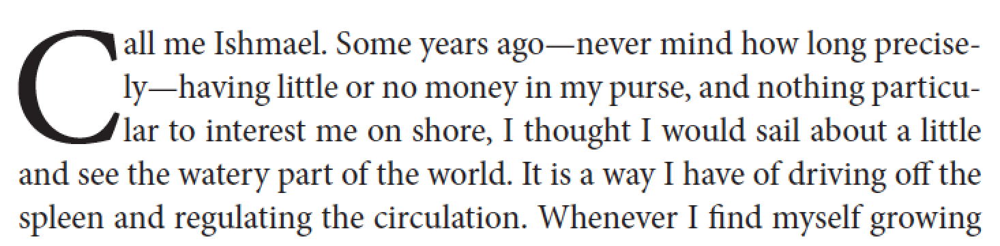 Three-line drop cap
The horizontal position of the drop cap and the surrounding text is also an issue, as variations in glyph shapes may require increasing or decreasing space to the right of the drop cap, and in some cases separate adjustments may be required for each line adjacent to the drop cap.
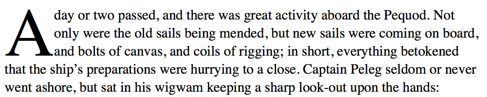 Drop cap without runaround 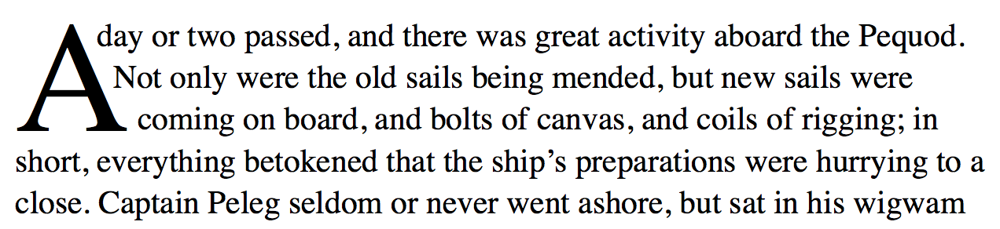 Drop cap with runaround
The position of a drop cap in relation to the left margin may also need to be adjusted. Letters like "C" may need to move left slightly to visually align with the left margin.
A drop cap may be desired on a paragraph which starts with a punctuation mark, most often a quotation mark. In this case, one option is to delete the quotation mark entirely.
Input on techniques for coping with initial punctuation on drop caps would be appreciated.
CSS needs a better mechanism to define drop caps. Right now, people typically apply a span to the letter, and then use:
This requires much trial and error to get the drop cap both the right height, and with the right vertical position. But what if the font changes?
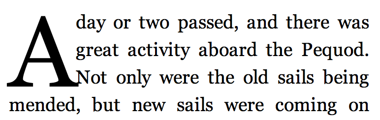 CSS Drop cap with Georgia 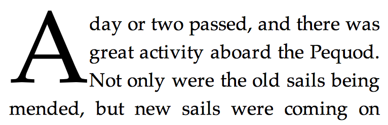 CSS Drop cap with Palatino
As you can see, when the font changes, the alignment is not preserved, and the drop cap may even crash into the adjacent text.
Raised caps
A raised cap is a large letter used to start a paragraph, which uses the same baseline as the rest of the first line.
Raised caps are much easier than drop caps in CSS, as often one needs only to define the font size.
Running headers and footers
Books often have material printed at the top and/or bottom of each page, outside the normal content area. These headers or footers may serve as guideposts for reader, fodder for designers, low-tech DRM, or merely a way to know what book your fellow train passenger is reading. There’s more to running headers than is dreamt of in the open web platform…
Content
Running heads and footers may contain:
Content from the document: book title, chapter or part titles, author name(s). Indexes and notes sections may have running heads to identify which entries are on a particular page.
Content intended only for running heads: shortened versions of chapter titles…
Page or section numbers
Chapter numbers
ornaments or other decorative type
Copyright statements
Date and/or time stamps
File names
Version numbers
combinations of the above
In some cases the content of running heads may have an internal structure—a chapter title might have an italic word—or may require different text styles or fonts.
Running head with text ornament
In this example, the running header contains the author name, the page number, and an ornament. This seemingly simple case was quite complex, using [[css3-gcpm]]-like features implemented by PrinceXML.
Running heads are generally omitted from the first pages of chapters.
Running headers are addressed by [[css3-gcpm]].
[epub3] has minimal support for headers and footers using oeb-page-head and oeb-page-foot.
Has any EPUB reading system implemented oeb-page-*?
[[css3-gcpm]] has two mechanisms for placing content in running heads:
named strings TK
running elements TK
Heads
General Considerations
TK
Heads at the top of a page
When a head falls at the top of a page, a spacing adjustment is often necessary. Here's a typical arrangement, with a line and a half of space above the head, and a half-line-space below, so that the text stays on the proper baselines.
Level One Head in Text
If that head appears at the top of the page, the subsequent text will be off by a half-line.
Head at top of page
Everything works out if we add a half-line-space back.
Head sunk to get back on lead
Heads at the bottom of a page
A head should never be the last thing on a page; it must be followed by two or three lines of text.
Bridge heads, side heads, and run-in heads
TK
Images
TK
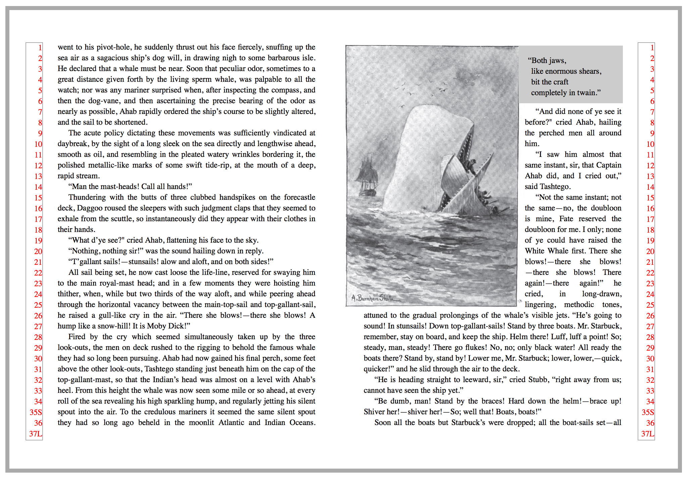 Figure with caption and runaround
Some things to note about this image
the caption and image are treated as a unit
Text runs around the image+caption
image runs right up to the gutter of the page (i.e. extends beyond usual content area)
Inline images
TK
Bleeds
TK
Images that cross spread
image before callout?
placing multiple images on page… inside/outside, top/bottom, stagger
broadside
placement of caption/title
Tables
Alignment
Many tables have specialized requirements for the alignment of cells in a given column.
Align on character
All entries in a given column may need to align to a predetermined character, most commonly a decimal point. Typically, the longest entry in the column should be centered, and then the other entries should align to that entry.
In some cases, a composite “longest entry” needs to be constructed:
| 445.85 |
| 12345.6 |
| 1.234 |
| .1 |
In this case, the user agent should act as if 12345.234 was the longest line, so the margin to the left of 12345.6 will be equal to the margin to the right of 1.234.
When a collection of whole numbers with no decimal points are in a column and are asked to align, the longest whole number should center in the column and the rest of the whole numbers should right align on the right indent of the longest whole number.
If the content of a table cell is being aligned to a character, that content should not have wrapping applied by the rendering system.
Flush left center alignment
What should we call this?
Also known as centering on the longest line, the longest line in a column is found and centered, and other entries in the column are aligned to the left edge of the longest line.
As before, header and footer cells are ignored, and the author should be able to exclude specified cells from the alignment process.
This type of alignment is often used in text, for poetry or prose extracts.
User agents should not break single-word cells.
Table widths
In print, tables are not randomly sized but typically set to one of a few fixed widths. This requirement necessitates that a composition engine know how to “snap to” one of the desired widths. This may help show relationships between separate tables.
broadside
placement of caption/title
spread
multi-page
continued lines
Lists
Footnotes
Having to read footnotes resembles having to go downstairs to answer the door while in the midst of making love.
—Noël Coward
In print publishing, a footnote consists of two parts: a reference (often rendered as an asterisk or superscripted number) and the footnote body.
Footnotes themselves can be quite complicated. Footnotes can contain multiple paragraphs, block quotes, poems, lists, and tables. Footnotes can contain other footnotes (an edge case, admittedly, but David Foster Wallace was notorious for this). Footnotes can extend across multiple pages. In short, a footnote is a container that can hold almost anything.
In order to describe footnotes in HTML, one must separate the footnote reference (which is an inline element) from the footnote itself, as HTML frowns on placing complex block structures inside paragraphs. This is quite different from something like DocBook, where the content model allows a footnote element inside a paragraph, and that footnote can itself contain multiple paragraphs, etc.
<p>It was the best of times<span class="ref-footnote-rw">*</span>, it was the blurst of times.</p>
<div class="block-rw footnotes-rw">
<p><span class="num-footnote-rw">*</span>Oh yes, but the telephone is so impersonal.</p>
<p>I prefer the hands-on touch you only get with hired goons.</p>
</div>
There may also be more than one reference to the same footnote.
Footnote handling as described in [[css3-gcpm]] assumes the footnote is coded inline at the point of reference. This situation is under discussion on the www-style list.
Inline footnotes and multiple footnote regions
Some types of footnotes may be displayed inline, as in the top . Other books (see ) may have two separate streams of footnotes, requiring two footnote regions.
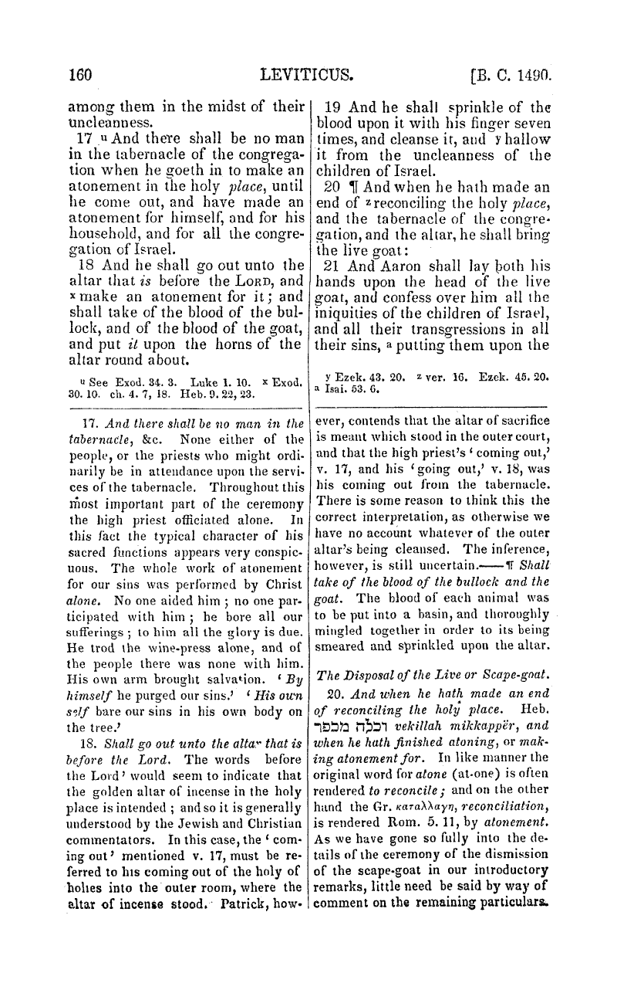 Inline footnotes 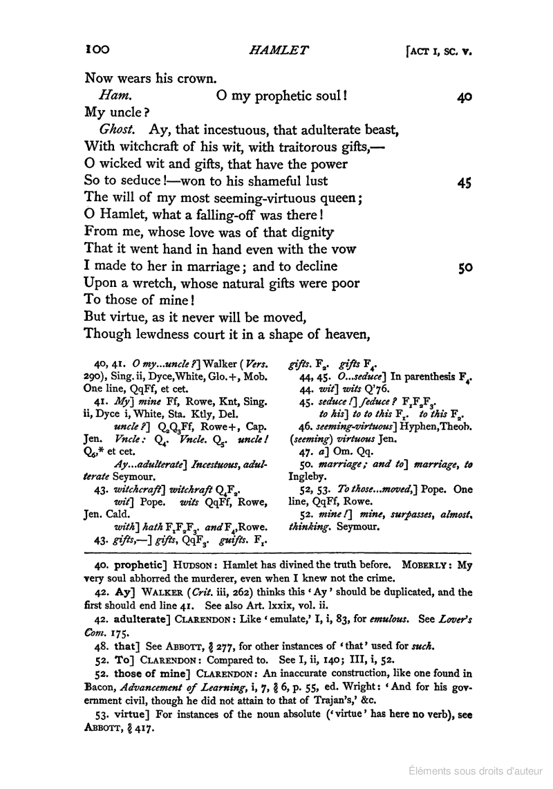 Multiple footnote regions Multiple footnote regions #2
At the foot of what?
Footnotes usually fall at the bottom of the page, but may need to be at placed at the end of a column, table, sidebar, or other document structure.
Breaking footnotes across pages
Some footnotes can extend across more than one page. Limits on the size of the footnote area(s) may be required, so that a page containing only footnotes is avoided.
Sometimes, footnotes may require so much space that they cannot all be placed before the end of a document section. In this case, it’s acceptable to have pages that consist only of footnotes.
Numbering
Three questions must be answered when numbering footnotes. First, which numbering scheme should be used? Second, what are we actually numbering? Third, is the numbering system reset at some point in the document?
Numbering schemes
Footnotes are most commonly numbered with arabic numerals, lower-case letters, or a sequence of symbols: *, †, ‡, and §, ||, and #. With symbols, they may be doubled or tripled after exhausting the sequence, but long before |||||| is used, the choice of numbering should be re-evaluated.
What are we counting?
Usually, footnote numbers count footnotes. But in some cases, the reference may be a line number, paragraph number, or section number.
Resetting numbers
Footnote numbering may restart with each new chapter, or each new page. The former is common with numeric footnotes, the latter with footnotes using symbols.
Footnotes are addressed by [[css3-gcpm]].
Digital publications often render footnotes differently from print. They may become pop-ups, move to the end of the section, or to the end of the document. We are not currently attempting to document digital best practices around footnotes.
Cross-references
TK
Sidebars
Sidebar
Some things to notice:
The image floats to the top of the column inside the sidebar
The columns themselves base-align
The sidebar title and “supertitle” are on the same line.
Marginalia
alignment with reference
Equations
Breaking equations
TK
Numbering equations
TK
Aligning equations
Many educational publishers require that all equations on a page align on the equals sign.
x + 3z = 7 + 2y
2x + y + z = 4
10 + 2y = 3x + 2z
Columns
Punctuation
Spacing around punctuation marks is a known obsession of typographers.
Language-specific spacing rules
Punctuation
English
French
Exclamation Point !
!
[thin space]!
Colon :
[thin space]:
Question Mark ?
?
[thin space]?
Open Quote
“
«[thin space]
Close Quote
”
[thin space]»
Em-dashes and en-dashes
To space or not to space? That is the question. Even within publishing houses, arguments continue over the proper display of em-dashes. Some imprints at Hachette use closed em-dashes, others insist on thin spaces around em-dashes. If the same book is to be published in the United Kingdom, em-dashes would be replaced with en-dashes, with larger spaces around them.
Given the subtlety of many of these rules, it’s helpful to use CSS to generate typographically-sophisticated output from material written by lay authors, or to adapt content to varying publisher or language requirements.
Older drafts of [[css3-gcpm]] contained a text-replace property, which has been implemented by PrinceXML.
body {
prince-text-replace: "—" "\200A—\200A";
}
In this example, we’re adding hair spaces around em-dashes.
Special Considerations for Genres
Education
College textbooks
Elhi
Language
Study guides
Trade
Fiction
Narrative nonfiction
Children’s
YA
Religious
Bibles
Travel
How-to
Manga/Comics/Graphic Novels
STEM
Reference
Legal
Dictionaries
Digital Issues
Large-Scale Issues in Pagination
Book optimization
In trade publishing, we often know how many pages will be in a book before it is written. The nature of printing and binding also mandate that the number of pages in a book be some multiple of eight, sixteen, or thirty-two pages. Publishers often limit how many blank pages are allowed at the end of a book.
Chapter optimization
A chapter that ends with only a few lines of text looks like a mistake, and wastes paper (or electrons!) Generally a page should contain at least five lines of text.
Baseline Grids
A baseline grid is a series of evenly-spaced horizontal alignment lines.
This is used to provide a vertical rhythm for a design, to align adjacent
content (text or graphics), and to align baselines on facing pages in
printed material.
The grid lines can be spaced at line-height intervals or a factor of
line-height.
Content can be aligned to the grid in various ways. Roman body text
typically sets the baseline on a grid line. Graphics might have their top,
bottom or both set on grid lines, or be centered between grid lines. Text
blocks (consider a multi-line heading with line-height at 1.4x grid
height) might have their last baseline or first baseline on a grid line,
or have the block's combined height centered between grid lines. Centering
is much more important in ideographic type systems.
If normal layout would result in a misalignment, content shifts down to
the next available grid line.
Sometimes it's necessary to have particular content opt out of aligning to
a grid.
There can be one or more grids per document. Multiple grids can overlap
(body grid and side content grid) or run in series (a vertical stack of
pages). Grids can be nested (think of a document being represented as a
graphic inside another document). A particular piece of content only
aligns to a single grid.
Of Leading and Sinkage: The Language of Print
Translating print designs to the open web platform can be tricky.
vertical distances are usually measured baseline to baseline.
print designers sometimes talk about a "text page" which includes the running head.
The basic text area is often specified with a gutter margin and a text "measure". In [[css3-page]] this area is described by left/right or inside/outside margins.
Leading
Line-height
Recto
Right-hand page of a spread
Verso
Left-hand page of a spread
The Classical Rules of Hyphenation and Pagination
At hyphenated line-ends, leave at least two characters behind, and take at least three forward.
Avoid leaving the stub-end of a hyphenated word, or any word shorter than four letters, as the last line of a paragraph.
Avoid more than three consecutive hyphenated lines.
Hyphenate proper names only as a last resort unless they occur with the frequency of common nouns.
Hyphenate according to the conventions of the language.
Link short numerical and mathematical expressions with hard spaces.
Avoid beginning more than two consecutive lines with the same word.
Never begin a page with the last line of a multi-line paragraph.
Balance facing pages by moving single lines.
Avoid hyphenated breaks where the text is interrupted.
Abandon any and all rules of hyphenation and pagination that fail to serve the needs of the text.
Further Reading
Bringhurst, Robert. The Elements of Typographic Style
Felici, Jim. The Complete Manual of Typography
Haralambous, Yannis. Fonts & Encodings: From Advanced Typography to Unicode and Everything in Between
Haslam, Andrew. Book Design
Highsmith, Cyrus. Inside Paragraphs
Kane, John. A Type Primer
Knuth, Donald. Digital Typography
Lawson, Alexander. Anatomy of a Typeface
Mitchell; Wightman. Book Typography
Nickel, Kristina. Ready to Print
Steer, Vincent. Printing Design and Layout (1948)
Tracy, Walter. Letters of Credit: A View of Type Design
Tschichold, Jan. The Form of the Book: Essays on the Morality of Good Design
Acknowledgments
Eric Aubourg, Luc Audrain, Bert Bos, Tom Byrer, James Clark, Brady Duga, Ivan Herman, Tony Graham, Bill Kasdorf, Jean Kaplansky, Liam Quin, Alan Stearns, Tzviya Siegman